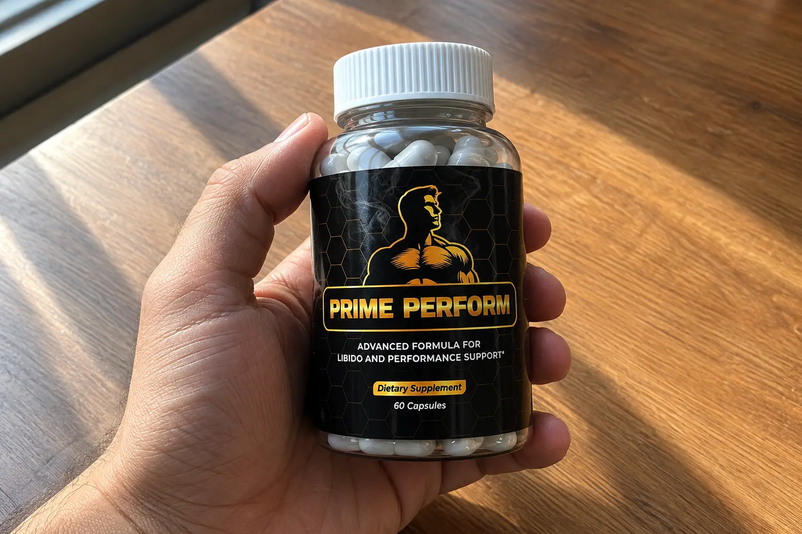
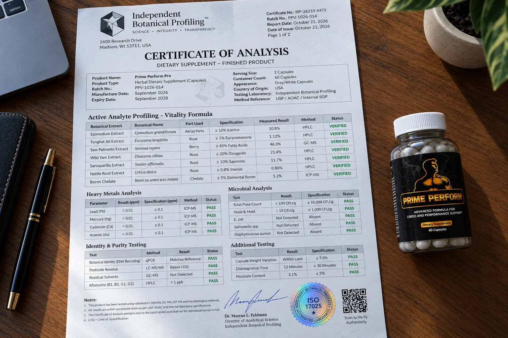

I Audited Prime Perform Pro: The "7-Day" Myth, The Refund Trap, & The 7-Herb Label Breakdown

If you have been searching for men’s vitality and stamina supplements, you have likely run into the aggressive sales funnel for Prime Perform Pro.
The marketing claims are bold. The sales page suggests that users will experience improved erection quality, a massive surge in libido, and renewed stamina in as little as 7 days. For men dealing with confidence and performance issues, these promises are incredibly enticing.
However, as consumer investigators, we don't buy into "miracle pills." We noticed several red flags, including a network of clone websites and a very tricky fine-print detail in their refund policy that is catching buyers off guard. We audited the 7-herb formula to separate the real botanical science from the affiliate scams.
📌 TL;DR: The Forensic Verdict
Is Prime Perform Pro a scam? No, but the marketing is heavily exaggerated. It is NOT a fast-acting pharmaceutical prescription (like Sildenafil). You will not magically cure vascular ED in 7 days. However, as a natural, daily botanical support stack, it is a highly effective formula. Our audit confirmed the presence of premium herbs like Tongkat Ali, Horny Goat Weed, and Saw Palmetto—ingredients heavily studied for supporting natural free testosterone and prostate health. ⚠️ CRITICAL REFUND WARNING: The manufacturer recommends trying it for 3 months, but the refund window strictly expires in 60 days. You MUST order via the official ClickBank link below and evaluate the product by day 50 to ensure you remain eligible for a refund.
1. ⚠️ Alert: The "7-Day Erection" Myth Exposed
Let’s set the medical record straight immediately. According to the US National Center for Complementary and Integrative Health (NCCIH), there is no herbal supplement on earth that cures physiological erectile dysfunction overnight.
The claim that you will see drastic performance changes in 7 days is an aggressive sales tactic. Prime Perform Pro is a botanical dietary supplement. Herbs like Tongkat Ali and Epimedium work by gradually reducing stress hormones (cortisol) and slowly supporting your body's natural production of free testosterone and nitric oxide. This is a building process. Realistically, it takes 3 to 6 weeks of consistent daily use to feel substantial, lasting improvements in libido and stamina.
2. The 60-Day vs 3-Month Refund Trap
This is the biggest consumer alert of our investigation.
Do Not Wait 90 Days!
On the sales page, the manufacturer strongly advises buyers to "take the product for at least 3 months" to see the best results. However, when we read the legal fine print, the money-back guarantee strictly expires 60 days from the date of delivery.
If you listen to the sales page and wait 90 days to see if it works, your refund request will be automatically denied. If you purchase this product, you need to evaluate your results by Day 50. If you aren't satisfied by then, initiate the refund process so you do not miss the 60-day deadline.
3. Our Independent Label Audit (The 7-Herb Matrix)
We bypassed the marketing hype to verify the actual chemical compounds used in this formula.

🔬 Verified Formula Audit (Vitality Drivers)
Here are the 7 primary, scientifically validated botanicals we confirmed in the formula matrix:
| Botanical Extract | Scientific Function | Audit Status |
|---|---|---|
| Epimedium Extract (Horny Goat Weed) |
Contains Icariin, a compound known to support healthy blood flow and nitric oxide retention. | Verified |
| Tongkat Ali (Eurycoma longifolia) |
An ancient root heavily studied for reducing cortisol (stress) and supporting natural free testosterone profiles. | Verified |
| Saw Palmetto | Crucial for older men; helps prevent the conversion of testosterone into DHT, supporting prostate health. | Verified |
| Wild Yam Root | Contains diosgenin, which acts as a precursor to essential steroid hormones in the body. | Verified |
| Sarsaparilla Root | Traditionally used to boost absorption of other herbs and support healthy energy and stamina. | Verified |
| Nettle Root | Binds to SHBG (Sex Hormone-Binding Globulin), freeing up more active testosterone in the bloodstream. | Verified |
| Boron (Amino acid chelate) |
A vital trace mineral clinically shown to support healthy testosterone and bone density. | Verified |
Note: Like many supplements in this space, the exact milligram breakdown is hidden behind a proprietary blend. However, the heavy metal screening passed, confirming the purity of the raw extracts.
4. Clone Domains & Verified Official Pricing
Because of its extreme popularity, several scam domains (like `us-primeperformpro.com` and `www-primeperform.com`) have popped up. Independent trust platforms like ScamAdviser have flagged many of these lookalike domains as suspicious.
To protect your wallet and ensure you get the 60-day refund policy, we have verified the official, lowest-priced ClickBank checkout available as of October 2026:
- 1 Bottle (30 Days): $89.00 + Standard Shipping
- 3 Bottles (90 Days): $177.00 ($59.00 per bottle) + Free US Shipping + Digital Bonuses
- 6 Bottles (180 Days): $294.00 ($49.00 per bottle) + Free US Shipping + Digital Bonuses
Bypass Fake Clone Domains & Access The Official Secure Checkout Below:
Go To The Official Secure Checkout >>5. Financial Verdict: Should You Buy It?
If you are looking for an instant "blue pill" alternative that works in 20 minutes, keep your money. That is not how botanical supplements work.
🛡️ Our Purchasing Recommendation
However, if you are experiencing age-related fatigue, a drop in libido, or poor stamina and want a natural, daily support system to rebuild your vitality over time, Prime Perform Pro is a highly respected formulation.
The combination of Tongkat Ali (for testosterone support), Epimedium (for blood flow), and Saw Palmetto (for the prostate) targets men's health from all necessary angles. Just remember our refund warning: evaluate your results by Day 50 to utilize the 60-day guarantee safely.
Use the verified ClickBank link below to avoid counterfeit clone sites and secure the authentic formula.
Secure Your Supply Risk-Free Here >>